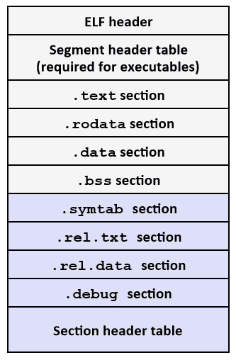

链接
使用链接器的好处
- 模块化。程序可以分解为更小的模块，并且可以把公共的函数做成一个库。
- 提高效率。可以分离编译，修改了一个源文件，只需要重新编译它，而不用编译其他文件。并且可以使用动态库，这样，公共的函数在内存中只有一份，但可以在多个程序中引用。
为了构造可执行文件，链接器必须完成两个主要任务，符号解析和重定位。
符号解析
在链接器的上下文中，有三种不同的符号：
- 全局符号。非静态的C函数和全局变量。
- 外部符号。由其他模块定义并被模块m引用的全局符号。
- 局部符号。带static属性的C函数和全局变量。
对于在运行时在栈上管理的符号，链接器不感兴趣。其实从汇编代码中我们也可以知道，栈上的对象已经在编译的时候确定了。
可以想象，对于局部符号的解析还是比较容易的，因为就在一个模块内引用，还有值得注意的一点是，如果栈上定义了同名的局部变量，会覆盖全局的变量。下面是一个例子。
#include <stdio.h>
//extern int a; error
static int a = 10;
extern int a; //ok
int main(){
int a = 20;//if remove, a = 10
printf("a = %d\n",a); // a = 20
return 0;
}
编译器把全局符号分为强符号和若符号。函数和已初始化的全局变量就是强符号，未初始化的全局变量是弱符号。链接器使用下面的规则来处理多重定义的符号名。
- 规则1：不允许有多个同名的强符号。
- 规则2：如果有一个强符号和多个弱符号同名，那么选择强符号。
- 规则3：如果有多个弱符号同名，那么从这些弱符号中任意选择一个。
规则2和规则3的应用会造成一些不易察觉的运行时错误，如下面这个例子。
/* main.c */
#include <stdio.h>
void f();
int y = 15212;
int x = 15213;
int main(){
f();
printf("x = 0x%x y=0x%x\n",x,y);
return 0;
}
/* f.c */
double x;
void f(){
x = -0.0;
}
使用命令
gcc main.c f.c
编译会出现以下警告
Warning: alignment 4 of symbol `x' in /tmp/ccqZNck7.o is smaller than 8 in /tmp/ccqZc8em.o
主要原因是，在f.c中，访问的x是main.c中的x，所以，这里对x的赋值会导致对y进行修改，因为对x赋值要写8个字节，而x只有4个字节，而y挨着x，所以y的值会被修改。所以，结果为
x = 0x0 y=0x3b6c
与静态库链接
相关的函数可以被编译为独立目标模块，然后封装成一个单独的静态库文件。然后，应用程序可以通过在命令行上指定单独的文件名字来使用这些在库中定义的函数。
先说说如何制作静态库：
- 生成对应的.o文件。
gcc -c add.c sub.c
- 将生成的.o文件打包。注意动态库的命名规则：lib+库的名字+.a。
ar rcs libMylib.a *.o
- 编译自己的文件（main.c）。
gcc main.c libMylib.a -o prog 或
gcc main.c -L .(使用的库文件目录) -l Mylib(要使用的库) -o prog
链接器链接静态库时对全局符号的解析使用了如下的算法。
- 按照命令行的顺序扫描.a文件和.o文件。
- 在扫描过程中维护一个未解析的符号表。
- 对于遇到的每一个新的.o和.a，尝试查找未解析符号表中的符号，如果找到，则在未解析符号表中删除该符号。
- 如果最后未解析的符号表非空，则报错。
这种算法有一个问题，就是链接的成功与否和链接的顺序有关。一个建议就是把库放在最后。请看下面这个例子。
/* main.c */
#include <stdio.h>
void f2();
int main(){
f2();
return 0;
}
/* f1.c */
#include <stdio.h>
int f1(){
printf("f1()\n");
}
/* f2.c */
#include <stdio.h>
void f1();
void f2(){
f1();
printf("f2()\n");
}
gcc -c *.c
ar rcs libf1.a f1.o
ar rcs libf2.a f2.o
gcc main.c libf1.a libf2.a //error
gcc main.c libf2.a libf1.a //ok
根据链接器的算法，我们可以理解为什么使用gcc main.c libf1.a libf2.a会出错。因为解析f1函数的时候，没有文件引用，所以不会把它加入到可执行文件中，而当扫描到f2函数的时候，后面没有出现对应的f1函数，所以会出错。
重定位
目标文件有三种形式：可重定位目标文件，可执行目标文件，共享目标文件。其中，可重定位目标文件格式如下图所示。

各个字段的含义如下：
- .text：已编译程序的机器代码。
- .rodata：只读数据。
- .data：已初始化的全局和静态C变量。
- .bss：未初始化的全局和静态C变量，以及所有被初始化为0的全局或静态变量。
- .symtab：一个符号表，它存放在程序中定义和引用的函数和全局变量的信息。
- .rel.text：一个.text节中位置的列表，当链接器把这个目标文件和其他文件组合时，需要修改这些位置。
- .rel.data：被模块引用或定义的所有全局变量的重定位信息。
- .debug：一个调试符号表。
- .line：原始C源程序中的行号和.text节中机器指令指令之间的映射。
- .strtab：一个字符串表，其内容包括.symtab和.debug节中的符号表，以及节头部中的节名字。
重定位有两步组成：1，重定位节和符号定义。在这一步中，链接器将所有相同类型的节合并为同一类型的新的聚合节。2，重定位节中符号引用。在这一步中，链接器修改代码节和数据节中对每个符号的引用，使得它们指向正确的运行时地址。
还是上面的例子，对main.o进行反汇编，我们可以得到以下的汇编代码。
objdump -D main.o
0000000000000000 <main>:
0: 55 push %rbp
1: 48 89 e5 mov %rsp,%rbp
4: b8 00 00 00 00 mov $0x0,%eax
9: e8 00 00 00 00 callq e <main+0xe> //call后面的地址为0，还没有确定
e: b8 00 00 00 00 mov $0x0,%eax
13: 5d pop %rbp
14: c3 retq
而我们对a.out进行反汇编，可以得到以下的代码。
objdump -D a.out
000000000000063a <main>:
63a: 55 push %rbp
63b: 48 89 e5 mov %rsp,%rbp
63e: b8 00 00 00 00 mov $0x0,%eax
643: e8 07 00 00 00 callq 64f <f2> //call后面地址已经确定了
648: b8 00 00 00 00 mov $0x0,%eax
64d: 5d pop %rbp
64e: c3 retq
重定位有两种最基本的类型，R_X86_64_PC32，重定位一个使用32位PC相对地址的引用；R_X86_64_32，重定位一个使用32位绝对地址的引用。虽然我们对其中的算法不太理解，但是我们知道，这种重定位肯定有办法可以做到的。
动态链接共享库
共享库是一个目标模块，在运行或加载时，可以加载到任意的内存地址，并和一个在内存中的程序链接起来。这个过程称为动态链接，是由一个叫做动态链接器的程序来执行的。
动态库的制作步骤如下：
- 生成与位置无关的代码（生成与位置无关的.o文件）。
gcc -c -fPIC add.c sub.c
- 将.o打包成动态库。注意动态库的命名规范：lib + 库的名字 + .so。
gcc -shared *.o -o libMylib.so
- 编译自己的文件（main.c）。
gcc main.c libMylib.so -o prog 或
gcc main.c -L .(使用的库文件目录) -l Mylib(要使用的库) -o app
- 指定动态库的路径，最常见的方法是增加一个临时的环境变量。
export LD_LIBRARY_PATH=.(动态库文件所在目录)
以上面的例子为例。
gcc -shared f1.o f2.o libf.so
gcc main.c libf.so
./a.out: error while loading shared libraries: libf.so: cannot open shared object file:
No such file or directory
export LD_LIBRARY_PATH=.(动态库文件所在目录)
这是我以前知道的方法，书上还提供了另外一种方法，这里需要将main.c修改为一下形式。
#include <stdio.h>
#include <stdlib.h>
#include <dlfcn.h>
int main(){
void *handle;
void (*f2)();
handle = dlopen("./libf.so",RTLD_LAZY);
f2 = dlsym(handle,"f2");
f2();
dlclose(handle);
return 0;
}
然后使用下面的命令编译。
gcc -rdynamic main.c libf.so -ldl
这样编译出来的程序不需要指定动态库的路径，只要动态库在当前路径，就可以正确执行。上面的代码中，为了简单，省略了错误处理的部分。